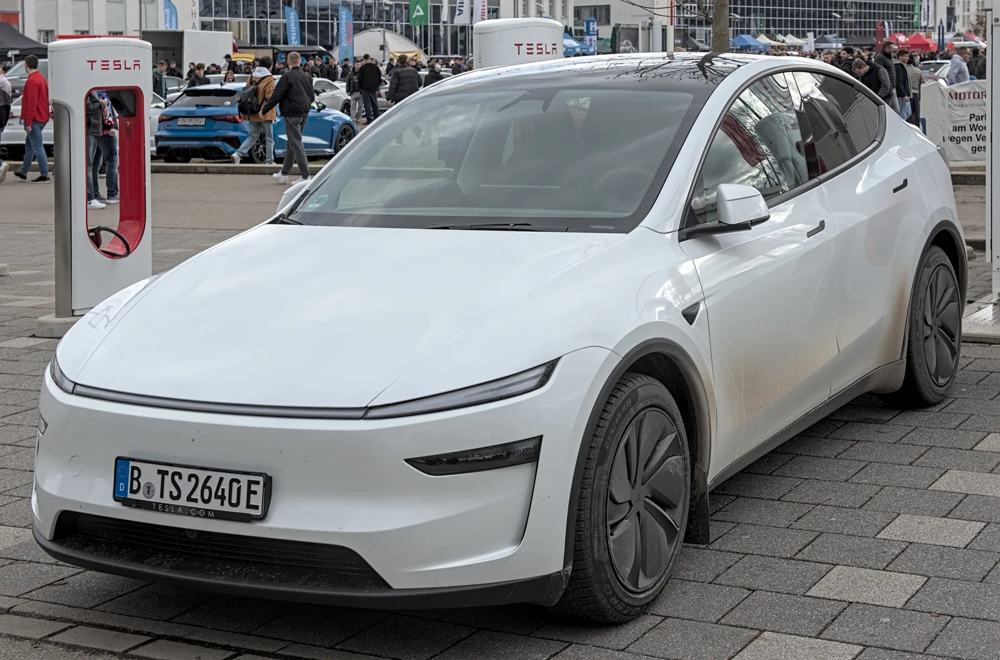
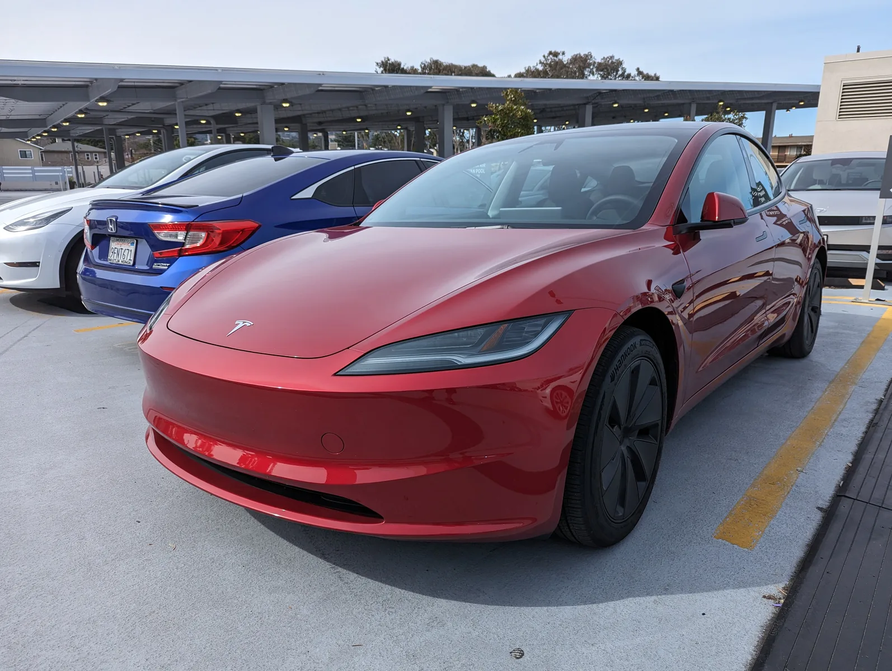
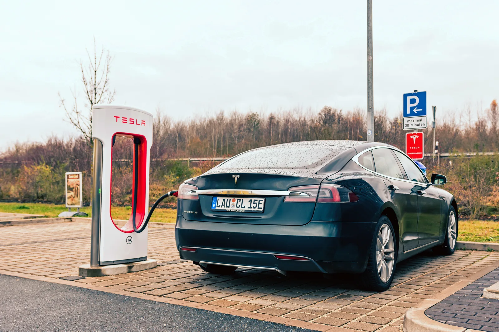

▲ 테슬라 모델 Y. 국내 등록 차량 중 FSD를 정상적으로 쓸 수 있는 비율은 20%대에 그친다 ⓒ Wikimedia Commons
국내에 등록된 테슬라 22만 9,311대 가운데, FSD(Full Self-Driving)를 정상적으로 활성화할 수 있는 차량은 단 4만 7,458대뿐입니다. 비율로는 20.7%. 나머지 5대 중 4대는 옵션을 사도, 구독료를 내도 기능이 켜지지 않는다는 뜻입니다.
업계에서는 이 숫자를 두고 "소비자가 알 수 없는 방식으로 설계된 함정"이라는 지적이 나옵니다. 왜 이런 일이 벌어지는지, 원인을 하나씩 뜯어봤습니다.
1. 숫자로 보는 현실
| 구분 | 등록 대수 | FSD 활용 가능 | 비율 |
|---|---|---|---|
| 전체 | 22만 9,311대 | 4만 7,458대 | 20.7% |
| 모델 Y | 16만 450대 | 1만 5,364대 | 9.6% |
| 모델 3 | 5만 9,184대 | 2만 3,744대 | 40.1% |
가장 많이 팔린 모델 Y의 지원 비율이 가장 낮다는 점이 문제를 키웁니다. 국내 테슬라 등록 대수의 70%를 차지하는 모델이 정작 FSD와는 거리가 먼 셈입니다.

▲ 테슬라 모델 3. 5만 9,184대 중 40.1%만 FSD 지원 대상에 포함된다
2. 원인 ① — 생산지에 따라 갈리는 인증
가장 큰 원인은 차량이 어디서 만들어졌는지에 있습니다.
| 생산지 | 인증 절차 | FSD 활성화 |
|---|---|---|
| 미국산(프리몬트) | 한미 FTA 규정에 따른 안전 인증 특례 적용 | 비교적 원활 |
| 중국산(상하이) | 국내 FSD 관련 안전기준 인증 미완료 | 제한 |
미국산 차량은 한미 자유무역협정(FTA) 규정에 의거해 별도의 국내 규제 절차 없이 안전 인증 특례가 적용됩니다. 반면 상하이 기가팩토리에서 생산된 중국산 차량은 국내 FSD 관련 안전 기준 인증이 끝나지 않아 기능이 막혀 있습니다.
문제는 최근 판매량의 무게중심이 중국산으로 옮겨갔다는 점입니다. 2024~2026년형 모델 Y 12만 4,666대의 대다수가 중국산 LFP 배터리 모델로, 사실상 일괄 FSD 미지원 상태입니다. 모델 Y의 지원 비율이 9.6%까지 떨어진 배경입니다.
3. 원인 ② — 하드웨어 세대와 트림이라는 변수
생산지가 같아도 모든 차량이 FSD를 쓸 수 있는 건 아닙니다. 자율주행 컴퓨터 세대(HW3/HW4), 차량 연식과 트림, 소프트웨어 구매 여부가 겹겹이 조건으로 작용합니다.
- HW3: 구형 자율주행 컴퓨터 탑재 차량 — 최신 FSD 기능 다수 미지원 또는 별도 업그레이드 필요
- HW4: 신형 자율주행 컴퓨터 — 상대적으로 최신 기능 지원 폭이 넓음
- 소프트웨어 구매: 옵션 결제 또는 구독을 해도 위 두 조건을 충족하지 못하면 활성화 자체가 불가능
즉 900만 원을 결제하기 전에, 내 차의 생산지·연식·컴퓨터 세대를 먼저 확인해야 하는 구조입니다. 그런데 이 정보는 판매 단계에서 소비자에게 명확히 고지되지 않는 경우가 많다는 게 문제로 지적됩니다.

▲ 테슬라 차량 내부 디스플레이. 소프트웨어를 구매해도 하드웨어 세대와 생산지에 따라 활성화 여부가 갈린다
4. 원인 ③ — 한국의 규제·정밀지도 인프라
생산지·하드웨어 문제를 넘어서면 국내 규제 환경이라는 또 다른 벽이 있습니다.
국내에서는 정밀도로지도(HD맵)의 해외 반출이 안보상의 이유로 엄격히 제한돼 있습니다. 구글 지도의 국내 정밀지도 반출이 오랫동안 막혀 있었던 것과 같은 맥락으로, 자율주행에 필요한 고정밀 지도 데이터를 해외 서버 기반 시스템이 자유롭게 활용하기 어려운 구조입니다.
또한 레벨 2 이상의 주행보조·자율주행 기능은 자동차관리법령에 따른 별도의 안전기준 적합성 평가를 통과해야 정식으로 도로에서 쓸 수 있습니다. 국토교통부가 자율주행차 시범운행지구를 지정해 규제 샌드박스 방식으로 운영하는 것도 이런 인증 절차가 아직 완전히 표준화되지 않았기 때문입니다.
결국 테슬라의 FSD가 미국에서 아무리 빠르게 업데이트돼도, 국내에서는 도로 데이터 접근성과 별도 인증이라는 두 개의 관문을 통과해야 실제로 켜질 수 있는 셈입니다.
5. 경쟁사는 다른 길을 간다
| 업체 | 방식 | 국내 인증 이슈 |
|---|---|---|
| 테슬라 | 카메라 비전 온리, 해외 개발·글로벌 일괄 배포 | 생산지별 인증 격차 큼 |
| 현대차·기아 | 레벨2+ HDA(고속도로 주행보조), 국내 정밀지도 활용 | 국내 인증 기준에 맞춰 개발 — 상대적으로 격차 적음 |
| 웨이모 등 라이다 기반 | 라이다+HD맵 결합, 지역 한정 운영 | 국내 미출시 |
국내 완성차 업체들은 애초에 한국 도로·지도 데이터에 맞춰 주행보조 기능을 개발합니다. 반면 테슬라는 전 세계에 동일한 소프트웨어를 배포하는 방식이라, 각국의 규제·지도 인프라와 충돌할 가능성이 상대적으로 큽니다. 이번 사례는 그 충돌 지점이 한국에서 특히 두드러지게 드러난 결과로 볼 수 있습니다.

▲ 테슬라 슈퍼차저에서 충전 중인 차량. 충전 인프라와 달리 FSD는 각국 자율주행 인증·도로 데이터 문제로 별도의 활성화 절차를 거친다
6. 정리 — 언제 풀릴까
국내 등록 테슬라 22만 9,311대 중 FSD를 정상적으로 쓸 수 있는 차량은 4만 7,458대(20.7%)에 불과합니다. 모델 Y는 9.6%까지 떨어져 사실상 대다수가 기능을 쓰지 못하는 상황입니다.
원인은 ①생산지별 인증 격차(미국산 vs 중국산), ②하드웨어 세대·트림 차이, ③국내 정밀지도·자율주행 안전기준 인증 인프라가 겹친 결과입니다.
오토트리뷴에 따르면 국내 안전기준 적합성 평가와 중국산 생산 물량의 인증이 완료되면, 현재 제한된 18만여 대가 자율주행 서비스 가능 차량으로 전환될 수 있습니다. 다만 그 시점이 언제인지는 아직 명확하지 않습니다. 옵션을 결제하기 전, 내 차의 생산지와 하드웨어 세대를 먼저 확인하는 게 현재로선 가장 확실한 방법입니다.